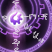
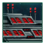

Factions
{kind=link}
Factions are groups of Pops with shared demands regarding the governance of the Empire. Most ethics have only one faction, and in most cases, every pop joins the faction corresponding to its ethic. Faction names are randomly generated but can be manually changed at any point.  Gestalt Consciousness empires don't have factions.
Gestalt Consciousness empires don't have factions.
Factions can begin forming after the first 10 years. Certain origins and civics allow factions to form earlier but those factions will produce half their regular resources until 10 years have passed.
Faction properties
Every faction has all of these properties. Approval, size, and support are usually the most important figures to keep in mind.
Formation
Factions can begin forming after 10 years as long as the empire has encountered alien life (including space fauna). Empires with the Broken Shackles origin will form factions after 1 year instead. Empires with the Parliamentary System or the Crowdsourcing civic will form them within the first 3 months regardless of origin. All factions require at least 500 pops with the Full Citizenship or Residence species rights to appear and if the number of pops drops below that the faction will be disbanded, but can be reformed later if conditions allow. There is also a 180-day cooldown between factions forming, though this does not apply to the very first set of factions. A faction can only form if its ethic attraction in the empire is at least 3%.
The Supremacist faction will only form if the empire does not have the  Pacifist or
Pacifist or  Fanatic Pacifist governing ethic.
Fanatic Pacifist governing ethic.
Approval
Faction approval is a value from 0 to 100, starting at a base of 50 and modified by fulfilling or ignoring the faction's demands on various issues, as well as actions taken towards factions. Faction approval adds a  happiness modifier to all member pops:
happiness modifier to all member pops:
{kind=link}
| Approval | 0-19% | 20-39% | 40-59% | 60-79% | 80-100% |
|---|---|---|---|---|---|
| −40% | −10% | 0 | +5% | +10% |
Size
Faction size is the number of pops who are members of the faction. Pops cannot join a faction if they have the Hive-Minded, Nerve Stapled, Zombie or Suppressed traits. Some factions have no ethics restrictions to join, others do. Some factions have different faction attraction values (this is separate from ethics attraction). Robot pops can only join factions if they have citizen rights, and cannot join the Traditionalist faction unless the empire is Spiritualist Individualist Machines. Alien species can never join the Supremacist faction and will instead join the Isolationist faction.
{kind=link}
Depending on the size, an unhappy faction will be listed as white, yellow, or red in the outliner.
Support
Faction support is the percentage of an empire's  political power held by pops in the faction. A faction can have higher support than another faction with a larger size if the smaller faction has many members who are elites with
political power held by pops in the faction. A faction can have higher support than another faction with a larger size if the smaller faction has many members who are elites with  living standards that increase their political power.
living standards that increase their political power.
{kind=link}
Issues
Issues are the primary way of affecting faction Approval: the more issues that are fulfilled, the higher the Approval. By their nature, factions with opposing ethics have some opposing issues, making it impossible to make all factions happy. An issue can be either fulfilled or not fulfilled. In either case, it might produce a happiness penalty (red), a happiness bonus (green), or be neutral (yellow). Many issues have requirements before they can appear, making it sometimes hard to know what will please a faction before unlocking the proper options. Some issues increase Approval if fulfilled, others decrease Approval if not fulfilled, and others do both.
Effects
Unless they have extremely low approval, all factions produce the following:
 Unity if the empires does not have the Crowdsourcing, Decentralized R&D or Media Conglomerate civic
Unity if the empires does not have the Crowdsourcing, Decentralized R&D or Media Conglomerate civic Trade if the empire has the Media Conglomerate civic
Trade if the empire has the Media Conglomerate civic Two Research resources if the empire has the Crowdsourcing or Decentralized R&D civic
Two Research resources if the empire has the Crowdsourcing or Decentralized R&D civic
Factions produce resources equal to combined political power of the pops (not percentage) times the approval of the faction times that resource's output multiplier. For unity, this is multiplier always 0.2, but for research (with crowdsourcing), this is 0.1 for the major research and 0.05 for the minor research.
Faction Support is Faction's Political Power divided by the global sum of political power of all pops in all factions.
Faction resource gain can be improved by the following:
 Egalitarian ethic: +25%
Egalitarian ethic: +25% Fanatic Egalitarian ethic: +50%
Fanatic Egalitarian ethic: +50%- Parliamentary System civic: +40%
- Democratic authority: +2% per ruler skill level
- Transcendent Democracy authority: +40%
- Spiritual Union authority: +10%
- Cordant Multiplicity authority: +25%
- Catalytic Command authority: +10%
- Hybrid Mandate authority: +10%
 Cybernetic Creed authority swaps: +10%
Cybernetic Creed authority swaps: +10%- The Living State technology: +10%
{kind=link}
{kind=link}
{kind=link}
Actions
There are three actions available to manipulate your empire's factions. If multiple factions have the same ethic only one faction with that ethic can be promoted or suppressed.
- Embrace shifts empire ethics one step towards the selected faction's ethics. It costs 5000 Unity, has a 10-year lockout and requires at least 20% Faction support. For 10 years the embraced faction will gain +10% Approval and the other factions will lose −35% Approval. This option is not available if the empire is a
 Dominion.
Dominion. - Promote gives +100% Ethic Attraction for the faction's primary ethic and can be used in preparation for embracing the faction.
- Suppress gives −75% Ethic Attraction for the faction's primary ethic and −50% Approval with the faction. This will cause pops to leave the faction and can potentially eliminate the faction.
- Extort is only available to empires with Oligarchic Sleepwork authority and gives the faction −10% Approval. If the empires does not have the Crowdsourcing civic the faction will replace its Unity output with a different resource. If the empires has the Crowdsourcing civic the faction will double its Research output. With the Stately Acclaim edict the faction will also gain +50% ethic attraction for the faction's primary ethic and gain +30% Approval.
{kind=link}
Factions
There are 9 standard factions, one for each ethic except  Xenophobe, which has two. Many faction issues are not present if the empire has the
Xenophobe, which has two. Many faction issues are not present if the empire has the  Fanatic Purifiers civic or require the empire to have established communications with a certain number of empires.
Fanatic Purifiers civic or require the empire to have established communications with a certain number of empires.
{kind=link}
The following issues appear on every faction:
- Every faction will gain +5 Approval if a leader with one of its ethics is part of the empire council
- Every faction will lose −20 Approval if a leader with one of its ethics isn't part of the empire council
- Every faction will gain +15 Approval if the ruler has one of its ethics
- Every faction will lose −30 Approval if the ruler has an opposed ethic
{kind=link}
Ethics mentioned in bold are the ones that are affected by faction actions.
Imperialist
| Faction | Ethic | resources | Extortion | Malleable Genes bonus |
|---|---|---|---|---|
{kind=link}
Progressive
| Faction | Ethic | resources | Extortion | Malleable Genes bonus |
|---|---|---|---|---|
{kind=link}
Prosperity
| Faction | Ethic | resources | Extortion | Malleable Genes bonus |
|---|---|---|---|---|
{kind=link}
Technologist
| Faction | Ethic | resources | Extortion | Malleable Genes bonus |
|---|---|---|---|---|
{kind=link}
| Issue | Contacts | Additional requirements to appear | Fulfillment requirements | |||
|---|---|---|---|---|---|---|
| Cooperative Diplomacy | Cooperative diplomatic stance | +5 | 0 | |||
| AI Allowed | +10 | −30 | ||||
| Bleeding Edge | 1 | No regular empire has Superior or Overwhelming Technology Level | +10 | −20 | ||
| Science Without Borders | 3 | 3+ Research Agreements or Research Cooperative | +10 | 0 | ||
| Synth Envy | 1 | Encountered a |
Any pop has a |
0 | −10 | |
| Research Cooperative | Member of a Research Cooperative federation | +5 | 0 | |||
| Secret Knowledge | Precursor Data Cache or Curator Insight empire modifier | +10 | 0 | |||
| Knowledge of the Past |  Arcane Deciphering technology |
Arcane Insights or Arcane Deciphering Cooldown empire modifier | +5 | 0 | ||
| Precursor Secrets | Found precursor homeworld | +5 | 0 |
{kind=link}
Totalitarian
| Faction | Ethic | resources | Extortion | Malleable Genes bonus |
|---|---|---|---|---|
{kind=link}
Traditionalist
| Faction | Ethic | resources | Extortion | Malleable Genes bonus |
|---|---|---|---|---|
Minerals if lithoid |
{kind=link}
Xenoist
| Faction | Ethic | resources | Extortion | Malleable Genes bonus |
|---|---|---|---|---|
{kind=link}
{kind=link}
{kind=link}
Supremacist
| Faction | Ethic | resources | Extortion | Malleable Genes bonus |
|---|---|---|---|---|
| +5% Elite Pop Resource Output +5% Specialist Pop Resource Output |
{kind=link}
Isolationist
| Faction | Ethic | resources | Extortion | Malleable Genes bonus |
|---|---|---|---|---|
| Minerals |
{kind=link}
{kind=link}
Manifesti
Manifesti is a special faction type that can appear during the Rise of the Manifesti event chain. If the faction approval falls below 35% for an extended period of time or 940 days pass since appearance of the faction, the faction will disband and will not appear again. Manifesti has 5 odd issues.
| Faction | Ethic | resources | Extortion | Malleable Genes bonus |
|---|---|---|---|---|
{kind=link}
{kind=link}
The Interlink
|
|
Available only with the The Machine Age DLC enabled. |
The Interlink is a faction that appears for empires with Democratic Interlink authority. All pops with the Cybernetic trait will join it. Unlike other factions it has no issues or ethics and cannot be promoted or suppressed.
Cybernetic Creed factions
|
|
Available only with the The Machine Age DLC enabled. |
Empires with the  Cybernetic Creed origin cannot have the Traditionalist faction and will instead start with four unique
Cybernetic Creed origin cannot have the Traditionalist faction and will instead start with four unique  Spiritualist factions. They produce both
Spiritualist factions. They produce both  Unity and another resource and with Crowdsourcing only the
Unity and another resource and with Crowdsourcing only the  Unity output is replaced.
Unity output is replaced.
| Faction | Resources | resources |
|---|---|---|
| ||
| ||
| Minerals |
| |
|
{kind=link}
{kind=link}
{kind=link}
{kind=link}
They initially have only two issues:
- Pious Polity: +5 Approval as long as empire remains
 Spiritualist, −5 otherwise
Spiritualist, −5 otherwise - Unhallowed Flesh: −5 Approval until the founder species gains the Cybernetic trait, +15 afterwards
Unlike other factions, most of their issues come from events that will happen every few years in the first years of play. Every event will add a new issue. Siding with a faction will increase its Approval but decrease the Approval of every other faction. Siding against a faction will increase the Approval of every other faction but greatly decrease the approval of the rejected faction. Both options will result in a net loss of Approval overall.
While all four factions are present, they will produce less  Unity than regular factions.
Unity than regular factions.
During stage 3 of the The Conclave of Fusion situation, one Cybernetic Creed faction must be chosen and the remaining three factions will be disbanded. Alternatively, all four factions can be merged into the The United Creeds faction. This will remove all event issues and add the Traditionalist faction issues, except the ones related to policies.
{kind=link}
Secret societies
|
|
Available only with the Shadows of the Shroud DLC enabled. |
Secret societies are three factions created a month after an empire with the Secret Societies or Influential Cartel civic completes the starting two first contacts. Instead of  Unity they produce empire-wide bonuses. Each faction will have one of the empire's governing ethics.
Unity they produce empire-wide bonuses. Each faction will have one of the empire's governing ethics.
| Faction | 100% Support bonus | Issue | Additional requirements to appear | Fulfillment requirements | Extortion | ||
|---|---|---|---|---|---|---|---|
| In Plain Sight |  Deep Space Black Site starbase building |
+5 | −5 | ||||
| Keys to the Lock | +5 | −5 | |||||
| Smoke and Mirrors | Own a system in a nebula | +5 | 0 | ||||
| Reading the Room | Communications with 1 empire | +5 | −5 | ||||
| Ears to the Wall | Communications with 1 empire | +5 | 0 | ||||
| Behind the Curtain | Communications with 1 empire | +10 | 0 | ||||
| Gauging the Atmosphere | Communications with 2 empires | +10 | 0 | ||||
| Knowing One's Audience | Communications with 3 empires | +15 | 0 | ||||
| In the Shadows | Communications with 1 empire | Cloaked ship inside another empire's borders | +10 | 0 | |||
| All Seeing Eye | Mega Engineering technology | Completed a Sentry Array | +10 | 0 | |||
| Favors for Favors | Galactic Community formed | +5 | −5 | ||||
| Political Actor | Galactic Community formed | +5 | −5 | ||||
| Laws of the Void | Galactic Community formed | +5 | −5 | ||||
| United in Purpose | Galactic Community formed | +5 | 0 | ||||
| The First Mask | Part of the Galactic Council | +5 | 0 | ||||
| The Second Mask | Part of the Galactic Council | Galactic Custodian | +10 | 0 | |||
| The Final Mask | Galactic Custodian | Galactic Emperor | +20 | 0 | |||
| Setter of Prices | Galactic Community formed | +10 | 0 | ||||
| Control the Narrative | Galactic Community formed | +5 | 0 | ||||
| +25% Trust Growth | The Right Choice | Influenced an election in the last 10 years | +5 | −5 | Minerals | ||
| Promenade | Communications with 1 empire | +5 | −5 | ||||
| All Seeing Eye | Communications with 1 empire | Active Sensor Link trade deal | +5 | 0 | |||
| Careful Footwork | Communications with 2 empires | +10 | 0 | ||||
| Playing Both Sides | Communications with 2 empires | +5 | 0 | ||||
| Whispers in the Dark | Communications with 2 empires | 2 Envoys assigned to improve or harm relations | +5 | −5 | |||
| The Grand Procession | Communications with 3 empires | +15 | 0 | ||||
| An Innocent Prank | Communications with 2 empires | +5 | 0 | ||||
| Shadow Puppetry | Communications with 2 empires | +10 | 0 |
{kind=link}
{kind=link}
{kind=link}
{kind=link}
{kind=link}
Conquering a system with a Sentry Array will not trigger All Seeing Eye but losing a system with a completed Sentry Array will not remove it either.
Scourge of the Volcano
|
|
Available only with the Infernals DLC enabled. |
For empires that have the Fire Cult civic the Traditionalist faction is replaced by Scourge of the Volcano.
{kind=link}
| Faction | Ethic | resources | Extortion |
|---|---|---|---|
{kind=link}
References
| Exploration | Exploration • FTL • Unique systems • L-Cluster • Pre-FTL species • Fallen empire • Spaceborne aliens • Enclaves • Guardians • Marauders • Caravaneers |
| Celestial bodies | Celestial body • Colonization • Planetary features • Planet modifiers |
| Discovery | Discovery • Anomaly • Archaeological site • Astral rift • Relics • Collection |
| Species | Species • Pop modification • Biological traits • Machine traits • Population • Species rights • Ethics |
| Leaders | Leader • Common leader traits • Commander traits • Official traits • Scientist traits • Paragons |
| Governance | Empire • Origin • Government • Civics • Council • Policies • Edicts • Factions • Traditions • Ascension perks • Ambition • Situations |
| Economy | Resources • Planetary management • Districts • Jobs • Designation • Trade • Megastructures • Waystation |
| Buildings | Planet capital • Common buildings • Planet unique • Empire unique • Holdings |
| Ships | Ship • Arkship • Ship designer • Core components • Weapon components • Utility components • Mutations • Offensive mutations |
| Technology | Technology • Physics research • Society research • Engineering research |
| Diplomacy | Diplomacy • Relations • Galactic community • Federations • Subject empires • Intelligence • Contracts • AI personalities |
| Warfare | Warfare • Space warfare • Land warfare • Starbase • Crisis |
| Others | Events • The Shroud • Preset empires • AI players • Stat modifiers • Console commands • Easter eggs |